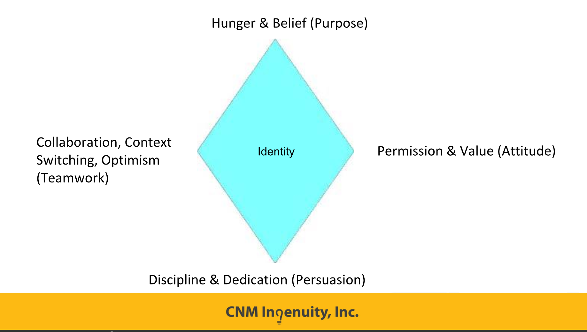
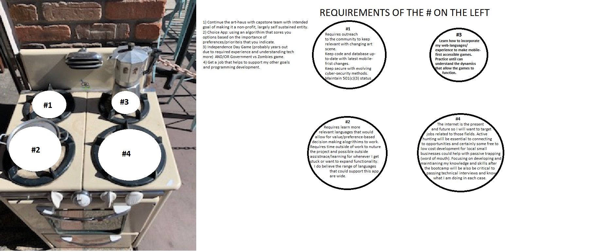

Reflections
Week [0]
In my first week I learned about the basic outline of the course and began multiple project.
I learned about php, database design, mysql, and how to complete various javascript challenges
using critical thinking and online resources. I also started my Data Design project and connected it
to the Boot Camp sql database. I began my Personal Web Portfolio, Professional Development Website
and revamped and updated my resume.
Week [1
In my second week I digested tons of material on Object Oriented programing and PHP. We completed
Phase One and Two our Data Design project and started a new project titled "Object Oriented". I completed phase
one of the "Object Oriented" project on Saturday January 26th after much confusion over what exactly to do and
what elements applied to the project. Earlier in the week we created character relationships based on Star Trek
the Next Generation to further delineate on the dynamics of object oriented design. I also completed the first
part of my Professional Web Project and navigated through the solutions to the weeks snap challenges to gain a
greater understanding of JavaScript and PHP. I can't believe we're already two weeks in, time is flying!
Week [2]
In my third week we got our capstone assignments. I am particularly excited I got my first pick (local
art website) and that Will and Billy are my teammates. For the capstone we completed our site's vision and goal, user personas and their
stories, the wireframe and the initial data-design. We also had a really fun CSS challenge assigned and I
have essentially completed it, with almost no distinction between it and the target web design. We had a lot of
great guest speakers come in Friday who shared the artistic aspects of what you can do with software development. I
also was happy to have completed some of the snap challenges and was able to understand how it all worked together.
We also had an informative professional development workshop regarding our professional identity. I found out some interesting information about my online presence.
In the table below you'll see a summary of my findings:
|
Professional |
Personal |
| Identity |
Brandon Huffman, Brandon T Huffman |
Brandon, Brando, Brand, and BHuff |
| Channels |
GitHub and LinkedIn |
Facebook, Instagram and Spotify |
| Content |
Bookeeper, swim coach, lifeguard, accounting clerk, and aspiring developer |
Athlete, loves nature, progressive poltical identity, and sparse online activity |
Also learned about this nifty identity diamond which I want to keep in the back of my mind as I continue to
develop my own professional identity and streamline my online presence to match.

Week [3]
In this fourth week we had a lot of classroom time to work on our own stuff. Most of time was spent
working on our first tickets for the capstone project, completing the new bootstrap challenge and updating my
resume per Dan's recommendations. On monday we started off reviewing our CSS challenges from the week before.
Tuesday we had a pro-dev practicing team work and communication. Since we successfully won forbidden island I
would say that my team is very affective at providing each other feedback in a constructive non-judgemental way.
This was key as sometimes it was difficult for us to get on the same page, but through active listening and
working out the possible moves we arrived at victory! By Friday we met with small businesses in the tech
industry who were not only inspiring but also had a lot of great advice for us.
Week [4]
During our fifth week we worked tirelessly to get our capstone project's classes and corresponding tests set up
and executing successfully. Hard working and efficient we made a lot of progress. We also had two snap challenges one of which
I had prepared for the weekend before. I am glad to say I was successful in execution although my Monday snap solution was extremely verbose compared
to George's. We had a therapist come it and talk about mindfulness and urged us to help regain focus, self-esteem
and happiness through meditation and focusing on our breathing in tense situations. By Friday we had some
guest speakers from the GAP talk about using bots to automate financial operations and tasks. I was surprised to hear
more being done to automate accounting and other financial actions through bots rather than with machine learning.
Apparently machine learning really isn't that far along in comparison. Nick from Java also spoke which is always insightful.
For pro-dev we learned a lot about the importance
of presenting/selling ourselves to potential employers in such a way that we show interest and value added for their company.
We do this by trapping (passive advertising, word of mouth) and hunting (going out into the community, making
connections, going out into the world).
A reoccurring theme is that small business (esp. start-ups) will want you to hit the ground running with higher
expectations than what might be realistic for some as first time developers. Another important aspect of this workshop
was to have goals of our own for our software development with paths in mind for how to achieve these goals. The
depth and variation of my goals goes beyond merely finding another job. I have a genuine interest in some specific development
application which hopefully will be useful/fun for others, but which are compelling regardless.
Please see my stovetop below for a more detail. More of the pro-dev activity/assignment will be posted below it.
Stove Top: Progress Toward Goals

Pro-Dev Activity
- Joined the Progressive Coders Network and talked with one of the founders (Stephen Scapelleti) about this technology
non-profit's work in the development and civic community. Their doing great things to bring the US up to date with
what is typical of modern democracies and developed countries (healthcare, unions and elections).
- On the for profit side I would like to target RSI and interview
their hiring manager Mia Petersen. I have met with her before thanks to James and can follow up with her at (505)
218-8502 or her email mia.petersent@RuralSourcing.com.
- My salary expectation are to make more than $15 an hour (equivalent of $30,000 a year) starting out.
- I really
want to do work that will help me achieve my other stove-top items so I am unlikely to pursue something that shy's
away from web-development (my projects are intended to be accessible to the internet community). There is a new
framework (React Native) that makes mobile first programs usable for I-Phone (Swift) and Android (java) without having to write
the code in their respective languages. I would love a job specifically using similar software.
- I plan/would love to follow up with an informational interview with BoomTime and RS21.
Week [5]
During our sixth week of Deep Dive we got a snow day during which I made a bunch of updates to my Personal Web Project. Yay! Also nearly completed the first tickets for our capstone. Big thanks to Billy, he has a keen eye for unit testing and fixing errors. When we came back to school on Wednesday we had a great field trip highlighting some local business useful to techies and entrepreneurs. We ended up at One Million cups and after the Surf School presented and a bunch of shout outs I got to speak to 6 different people! The first I spoke to was easy to approach since I already know him. Gus Liakos from Cohort 20 (same Cohort as James was in) is now a co-founder of Let's Get Together which aims to connect people to interesting events happening around town everyday kind of like the alibi, but with technology. I then spoke with Randy from a Data Analytics company. With my background in Economics and Accounting he encouraged me to look into Finance Tech as a career or data analytics. I would have gone to the Data Analytics conference that was Friday night later in the week if not for the considerable cost. I then lined up to speak to the surf school dude when I met Janice Biondo. She owns her own business meditative message business and needs help with her wordpress site. I volunteered to help her once I get out of the boot-camp. Looks like I am going to be learning Word Press! Then finally we both got to speak to the surf school guy Q.E.D. Quaid Tatlow. Can't get that image of Quaid on the surface of Mars from Total Recall out of my head now. Anyway apparently he is actually from California. After that I spoke with Bryan from Noventum. He got his masters in computer science so I was sure to ask him some questions about the different languages and frameworks. He told me php is very useful to learn and is similar to Java. However, he also said it's more typical for senior developers to work backend and php. That's a relief, jumping into php backend right away sounds really tough. Lastly I spoke to Ava who worked for the cancer cure group. She was as lively as she was in her presentation. She was really excited to hear about Crispr Cas9, a revolution in DNA re-sequencing that poses great potential for curring a whole host of diseases. We ended up talking so long I had to rush back to class!
On Thursday we had some open work time, followed by a lecture about Cookies and Rest. During openwork time I prepared for our first Assessment which was the following day. I think I did well on the Assessment, but we'll find out soon enough. After the assessment WEST, CNM Ingenuity, Fat Pipe and a previous Deep Dive grad all gave presentations. Very insightful! Hope you have a great week Dan and thanks for reading if you made it all the way down here!
Week [6]
Seventh week. I had a hard time sleeping this week, so it is somewhat of a blur. We started our API set up and by the end of the week were close to completing API testing for our project. Specifically we need to get cloudinary set up or find a way to test our images without it. Billy took care of testing the Gallery class over the weekend, but can't pull the Gallery's out of the database... Strange. I have completed the outline of my PWP and added all of the content over this weekend. On Monday we got our Assessment Grades back, I am pretty pleased, though sad that it says I didn't successfully instantiate the object. I really thought I did! On Pro-Dev Friday we had a really cool field-trip, going to a data-center and getting presentations from various local data-centric software companies including the ever famous RS21. Visualising big data in a useful and attractive way is super interesting and insightful. I could use more data diagrams myself. Next week our PWP is due, we start Angular and we have interviews! It's going to be a busy week!